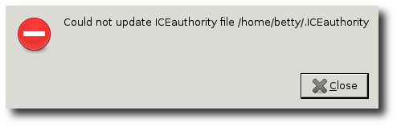
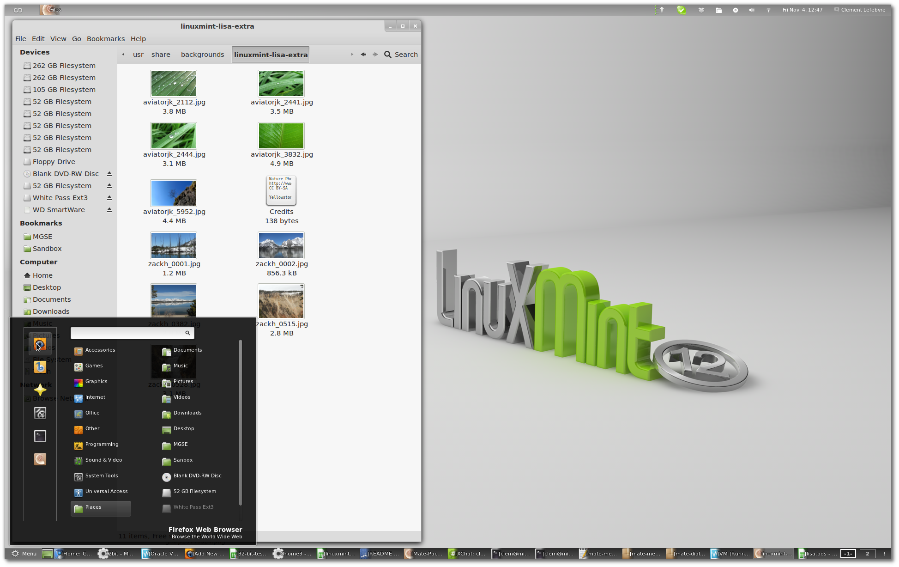
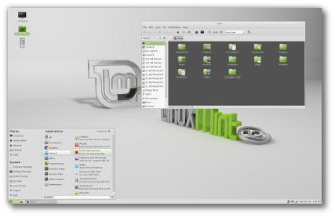
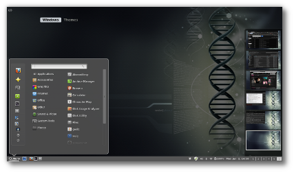
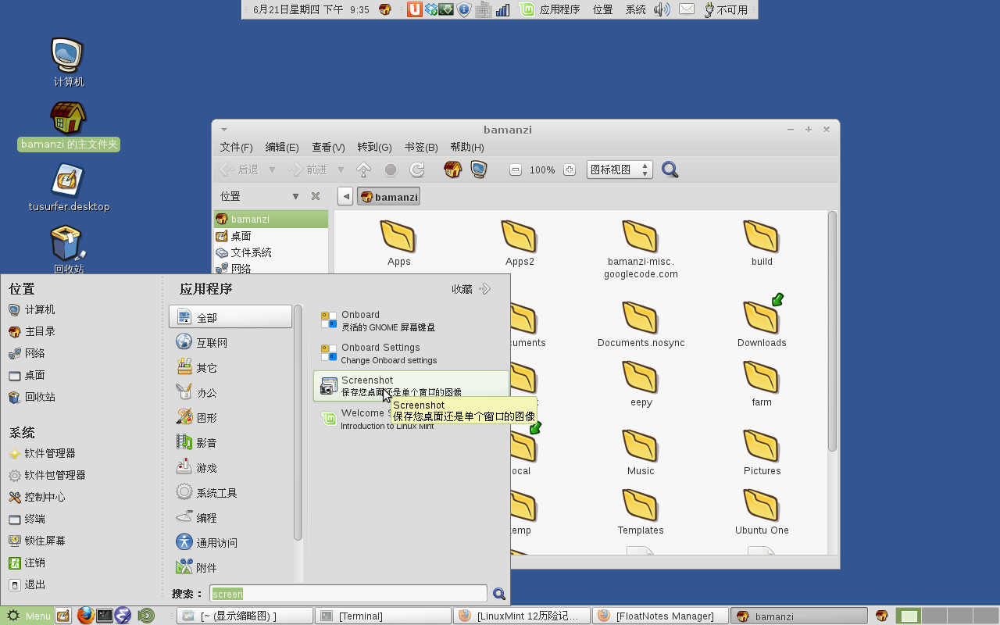

Created 星期六 23 六月 2012
@linuxmint @gnome
上周三晚，因为想使用launchpad上提供的wine-1.4 （现在比较懒得自己编译 了），又觉得自己的LinuxMint比较老了（还是Mint 11 Katya，而Mint 13 Maya 在上个月都出来了），于是就决定来个 apt-get dist-upgrade 。
打完收工，重启系统，问题来了——图形界面进不去，在GDM里面输入用户名、密码 再回车后，系统忙一阵，蹦出来一个提示框: https://www.maow.net/ICEauthority

网上一阵狂搜，有很多很多很多人出现这个，大都说是权限问题，但我一个个试 了，没一个能解决问题——唯一的收获是发现这东西跟GNOME 3有关。之前听说 GNOME 3需要3D加速，我这集显看来是跑不起来了？
不详细说折腾过程了，反正白天上班的空档就阅读一下LinuxMint 12/13的 Release Notes (12 Lisa/13 Maya 和Whats New (12 Lisa/13 Maya )，尤其是跟 GNOME 3相关的部分，然后每晚折腾一下，到周六晚终于搞定了——其实解决方法很 简单，就是GDM 3在作祟，我干掉它换用 LightDM 就行了——至于具体原因我也懒 得去深究，反正就一登录界面嘛——而且我中间下载过LinuxMint 12的virtualbox 磁盘镜像，发现这个版本缺省的就是使用的LightDM。
下面介绍一下对我在这个过程中了解到LinuxMint对GNOME 3提供的一些解决方案， 供各位参考(之前在各个网站上听到过不少对GNOME 3的争论，其实我还一直没有 真正用过它，下面只是我在解决上述问题中了解到的一些内容——而短期内我还是 选择GNOME 2，也就是MATE）:
Linux Mint对GNOME的用户提供了三种升级方案，Linux Mint 12提供了Gnome Shell+MGSE和MATE，而Linux Mint 13增加了一个Cinnamon。 这三者是可以共存的: "You can install Cinnamon alongside other desktops (including MATE and Gnome Shell/MGSE). " - Linux Mint Blog: Introduing Cinnamon)。
LinuxMint了解到用户们对于GNOME 3(Gnome Shell)的可用性有很多抱怨，于 是在LinuxMint 12 (Lisa)里面提供了MGSE和MATE两个东西。MGSE即Mint Gnome Shell Extensions，是LinuxMint对Gnome Shell添加的一些扩展（本身 也是基于Gnome Shell的扩展技术来开发的)，主要是包含了底部面板(GS缺省 只有一个顶部面板)、应用程序菜单、窗口列表和Alt-Tab修正（GS缺省只能切 换应用程序，不能直接切换窗口）。—— New Features in Linux Mint 12: Gnome 3 and MGSE

而MATE则是基于Gnome 2.x的一个分支(Many users refused to accept the new GNOME, calling on someone to continue development of GNOME 2.)， 为了避免跟Gnome 3.x的一些包相冲突而改了名字（以及一些代码）。MATE的 大部分包名是将 gnome 几个字母换成了 *mate*，比如 mate-panel, mate-terminal, 有些原本不包含"gnome"字样的也改了，比如 eog -> mate-image-viewer, totem -> mate-video-player ，但有几个例外，比如 nautilus -> caja, metacity -> marco
Linux Mint 12的CD版本只集成了MGSE，而没有MATE（但DVD版本有)，需要自 己安装: apt-get install mint-meta-mate 。但Linux Mint 12带的MATE还 是1.0，它自己在Release Notes里也说 MATE is at a really early stage of its development and isn't stable yet ，不过这里有最新的包(当前是 1.2.0): http://mate.karapetsas.com/ (安装方法是将 deb http://packages.mate-desktop.org/repo/ubuntu/ oneiric main 加入 /etc/apt/source.list.d/mate.list后，=apt-get update && apt-get install -t oneiric mate-desktop=
Linux Mint 13则提供了两种CD，一种是MATE 1.2，一种是Cinnamon 1.4。
一开始我还以为MATE是LinuxMint创造的，网上搜了一下才发现是由Arch Linux发起的(Wikipedia: MATE (desktop environment): History，目前支持 Arch/Mint/Debian/Ubuntu，但集成到发行版的只有Mint (参见: http://mate-desktop.org/about/).

(原图)
考虑到MGSE只能基于Gnome Shell开发，能力有限，Linux Mint 13又多出来一 个东西: Cinnamon，它是在GNOME 3(Gnome Shell)上分支出来的，旨在提供一 个接近传统风格的桌面(Linux Mint Blog: Introducing Cinnamon)。但底层 仍然采用Gnome 3的技术，比如，还是需要3D加速（参见: New features of Linux Mint 13 - Cinnamon 1.4）。
前面说过，MGSE,MATE和Cinnamon可以共存的，不过Linx Mint 13的CD还是发 了Mate和Cinnamon两个版本。

~~~~~~~~~~~~~~~~~~~~~~~~~~~~~~~~~
从http://mate.karapetsas.com/ 升级 python-mate-menu和python-mate-desktop到最新的1.2.0版本后，mintmenu可以添加到面板上了
linuxmint 12, mate 1.2.0, mintmenu 5.2.8

| cinnamon_thumb_2.png | 122kb | |
| gdm3-authority-error.png | 9.21kb | |
| mate-mintmenu-1.2.png | 159kb | |
| mgse_shell_extension_desktop.png | 755kb | |
| thumb_mate.png | 72.9kb |
{kind=link}
{kind=link}
{kind=link}
{kind=link}
{kind=link}